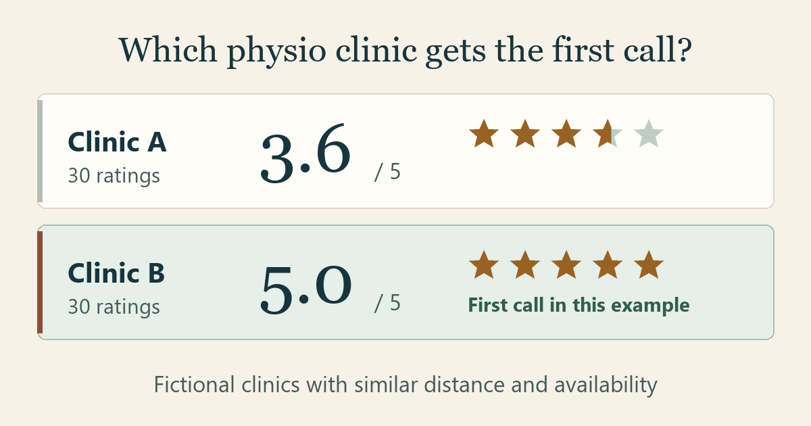

Published by ReviewRemoval. Authorship, sources and correction standards.
On this page
A patient gets your clinic’s name from a friend, then searches for it before booking. If a misleading review raises doubts about billing or the front desk, the patient can open another clinic’s listing in seconds. ReviewRemoval assesses suspected fake, abusive or off-topic Google reviews for Canadian physiotherapy practices and handles the reporting work you approve.
What a patient sees before booking
Imagine two nearby clinics with evening appointments and 30 reviews each. One shows 3.6 stars. The other shows 5.0. In this example, the patient calls the higher-rated clinic first. A clinic can lose that inquiry before anyone visits its website or speaks to reception.

Google reviews can help people find a clinic even where referrals are the main source of new business. In a 2025 survey of 550 first-time patients at one women’s physiotherapy clinic in Poland, 12% named Google Maps reviews as their source of information about the clinic and 49% named a friend’s recommendation. The result describes that clinic’s patients. Use your own intake records to learn how people find yours. Read Zuzanna Minga’s physiotherapy clinic study.
Star averages and search position each affect the route to a booking. Google’s local results also depend on relevance, distance and prominence. Check that your listing shows current hours, a working booking link and clear service and billing details. An accurate profile helps someone decide whether to book once they’ve found you. See Google’s local ranking guidance.
What two more attended assessments could be worth
Estimate value using what the clinic collects and the direct cost of delivering the visit. In this hypothetical example, a clinic collects CAD $150 per initial assessment and incurs CAD $60 in incremental delivery costs. Each attended assessment contributes CAD $90 before fixed overhead and taxes.
- One additional attended visit brings in CAD $150 in collections and contributes CAD $90.
- Two additional attended visits bring in CAD $300 in collections and contribute CAD $180.
- One successful removal through ReviewRemoval costs CAD $175 in service fees before applicable taxes.
Use your own margin to work out how many attended visits would cover the fee. Track inquiries, first assessments booked, and first assessments attended over comparable periods. Changes in availability, referrals and advertising can shift those figures as well. The amounts above illustrate the calculation.
It also pays to put the star comparison in context. If a clinic has an exact 3.6 average across 30 ratings and Google removes one ineligible one-star rating, the remaining 107 stars across 29 ratings average about 3.69. The size of the change depends on your starting score and review count. See the rating-impact calculations.
Which reviews are worth reporting?
Google removes reviews that violate its policies. Before you report one, save the public link, posting date and the detail that connects it to the policy. Google Maps content policy · Google’s reporting and appeal process.
- Suspected fake engagement. A cluster of nearly identical posts appears after an unsolicited demand. Keep the relevant public URLs and the timing of the posts.
- Off-topic content. The review is an advertisement or clearly describes an unrelated business. Preserve the specific wording that connects it to the other business.
- Harassment or private information. A review threatens staff or shares private contact or health details. Document the concern securely and use the appropriate reporting route.
A real complaint about a cancellation fee, wait time or communication can tell you what to fix for the next patient. If you reply publicly, keep it general and invite the person to contact the practice privately. Keep treatment details and records out of public replies. College of Physiotherapists of Ontario communication standard.
Hand the reporting work to ReviewRemoval
Start by sending the public Business Profile or review link and a short note about the policy concern. We’ll assess the case for free, identify useful evidence and tell you which reviews we can take on. Keep patient names, appointment records and clinical details inside your practice.
Once you approve a written scope, we prepare the report and manage the agreed follow-up, including an appeal where applicable. The fee is CAD $50 upfront per approved review plus CAD $125 for each successful removal. Google decides whether each review comes down. See Canadian pricing and examples.
Need help with a specific review?
Send the public Google review or profile link and a short description of the concern. We’ll tell you what might qualify and what paid work would cover.
Request a free clinic assessment